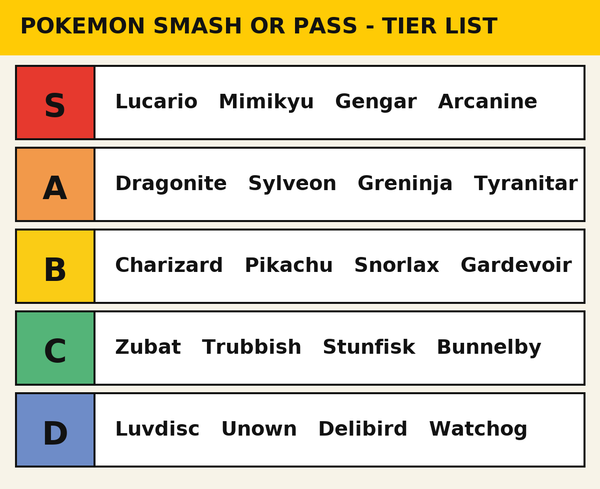

Everyone thinks their taste in Pokemon is obvious until Pokemon Smash or Pass actually puts them on the spot. Sure, you'd smash Charizard. Then the game serves you a Probopass and you realize you have no philosophy, only vibes. This list is my attempt at a philosophy — a working standard for the whole 1,025-species dex — browsable at PokemonDB — from the ones I'd smash before the sprite finishes loading to the ones that make me stare at the ceiling.
One disclaimer, because the comments section exists: this is about design, charm, and the joy a Pokemon brings when it shows up on screen. Nothing weird.
S Tier: Instant Smash
Lucario. The aura dog became a Smash Bros. mainstay for a reason. Clean lines, a cool typing, and it somehow looks ancient and futuristic at the same time. Easiest smash in the dex.
Mimikyu. This one gets a paragraph. Mimikyu showed up in Sun and Moon in 2016 as a Ghost/Fairy whose entire deal, per the Bulbapedia Pokedex, is that it's a lonely creature wearing a handmade Pikachu costume because Pikachu merchandise was everywhere and it wanted to be loved the same way. That is an astonishingly dark brief for a kids' game, and the design executes it perfectly — the scribbled-on face, the drooping neck, the shadowy whatever-it-is underneath that the games have never shown. The anime gave it its own song. People cosplay the costume. S tier, obviously.
Gengar. Twenty-nine years of new designs and nobody has topped the purple menace — a design record that has stood since 1996. It grins at you from a wall shadow. Enough said.
Arcanine. Smash. Next question.
A Tier: Strong Yes
Dragonite. The original pseudo-legendary is a big friendly dragon mailman, and the contrast between its goofy face and its ability to fly around the planet in 16 hours is exactly the kind of commitment I asked for. Docked half a tier because Dragonair is prettier and everyone knows it.
Sylveon. The best Eeveelution, and I'll defend the ribbon-flesh debate: they're feelers, they're cute, move on. Greninja. A frog ninja with a tongue scarf should be stupid. Instead it's the coolest starter final form ever designed — it won the official Pokemon of the Year fan vote in 2020, out of a field of nearly 900 — and the entire Kalos anime was basically its highlight reel. Tyranitar. A kaiju. They just made a kaiju. Unambiguous.
B Tier: Reliable, Not Exciting
Welcome to the tier that starts arguments. Charizard lands here, and before you close the tab: Charizard is a very good orange dragon. It's also the most overexposed Pokemon in history, with two Megas, a Gigantamax (PokemonDB logs the full form list), and a permanent seat in every TCG set at prices that suggest it pays Game Freak's rent. The design is a B. The brand is an S. Average it out — and if you'd rather rank by battle use than design, the Smogon tiers will disagree with this list on half of it.
Pikachu gets the same treatment — iconic beyond measurement, but as a design it's a round yellow mouse. Snorlax is beloved, blocked my path in 1998 (and again in the remakes), and has been coasting on that ever since. Gardevoir is elegant and genuinely interesting as a concept — the whole Ralts line growing into a graceful guardian is one of the better design arcs in the dex — and loses points only because the internet has made it impossible to discuss normally. You know what you did.

C and D Tier: Where Friendships End
Zubat lands in C only because Crobat redeems the family; the base form is a cave tax you pay in encounters. Trubbish is a garbage bag — I respect the honesty, and I still don't have to smash it. Someone at Game Freak clearly loves it, because its evolution got a Gigantamax form, which is honestly more confusing than the garbage thing. Bunnelby exists to be the first thing you catch and the first thing you box.
Then there's Stunfisk, which gets its own paragraph because the derp face was funny exactly once, eleven generations ago, and it has been lying flat on route floors daring me to feel something ever since. I feel nothing. C tier — and only because D felt cruel.
D proper. Luvdisc is a pink heart whose main function was holding Heart Scales, a Pokemon whose design brief was "inventory." Unown is twenty-eight forms of the same disappointment. Delibird's signature move can heal the opponent, which tells you everything you need to know. And Watchog looks like it's about to ask for the manager of Route 1.
The 5 Hardest Pokemon Smash or Pass Decisions
Every player hits these eventually — five picks where my gut and my brain file separate reports, in no particular order, because ranking them felt like a sixth hard decision:
Pikachu. I still don't know. I smash it every time and feel nothing either way. Judging the mascot feels less like an opinion and more like paperwork.
Eevee. Adorable, obviously. But smashing Eevee feels like picking one Eeveelution and betraying eight others. I usually pass, and then feel guilty about that instead.
Gardevoir. Genuinely elegant design, but it's carrying so much internet baggage that I can't tell anymore whether I'm judging the Pokemon or the discourse. I go back and forth.
Ditto. It can become any Pokemon, which should make it an automatic smash. But the thing on the screen is a pink blob with a face drawn on. I don't have a principle that resolves this.
Magikarp. Useless flopping fish. Also the prologue to Gyarados. Some days that's inspiring; some days I'm just judging the fish.
Now Make Your Own
That's the list. It's wrong in places, and where it's wrong is the interesting part — Pokemon Smash or Pass deals you whatever comes next and you decide on instinct, so run a session, keep your own tally, and see where you diverge. Bring a friend; the arguments are the point. My money says Stunfisk survives longer in your heart than it did in mine. If you want more rankings to fight about, Game8 runs its own tier lists for the whole dex.